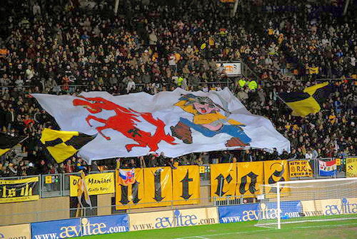
Een Roda- koempel achtervolgt het Twentse paard.
Twente dat de toss wint kiest voor verandering van
speelrichting wat zoveel inhoudt als het graven van het
eigen graf (statistisch bewezen).
foto: sv-online
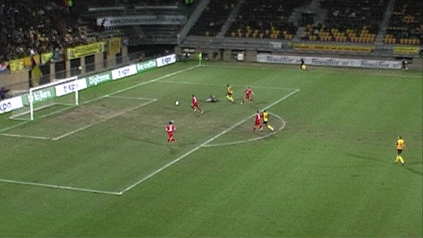
Lamah scoort uit een voorzet van Janssen: 1-0, (24').
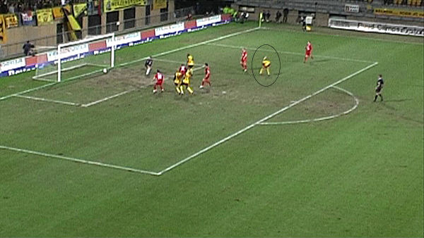
Behoorlijk knappe goal van Janssen die eerst een tegenstander uitkapt en
vervolgens met links in de
verre hoek binnen schiet: 2-0, (31').
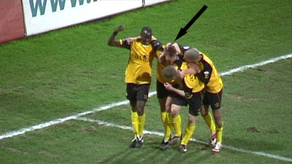
De man met de supperstrakke V-snit wordt gefeteerd door zijn kameraden.
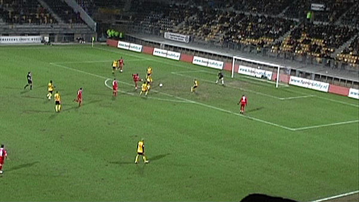
Even later vindt N'Kufo een gaatje in de defensie en schiet de bal voorbij
de vastgemetselde Castro:
2-1, (34').
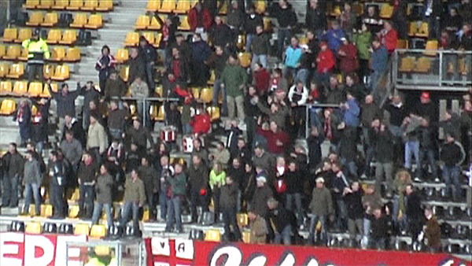
Vreugde bij de supporters van Calimero Enschede.
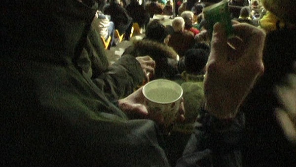
MVV-supporter met bekertje thee.
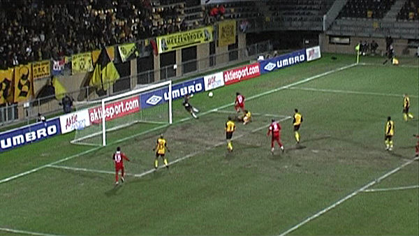
Castro voorkomt een bijna zekere goal van invaller Hersi.
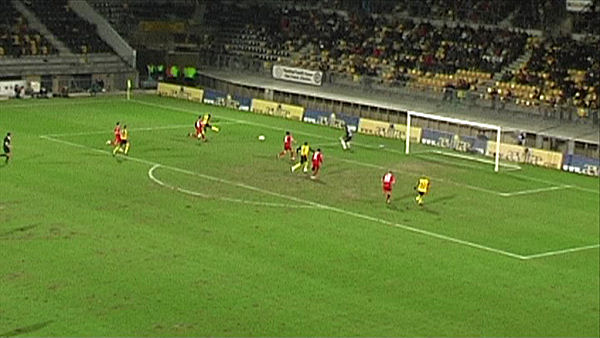
Hard schot van Lamah wordt niet afdoende verwerkt door Bosschker waarna
invaller Van Tornhout ook
in deze editie van Roda-Twente kan scoren en wel....
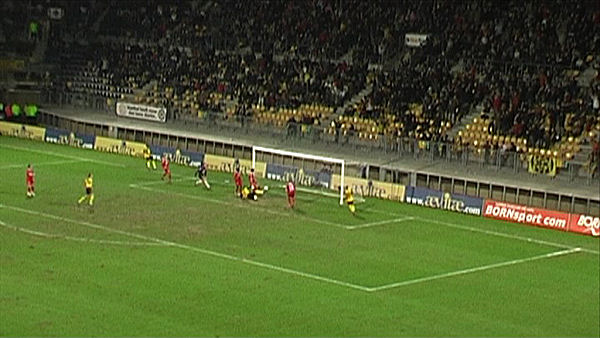
...via een binnenschuiver: 3-1, (67').
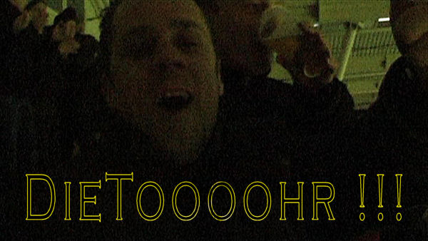
Jaja, Dieter is weer helemaal hip.
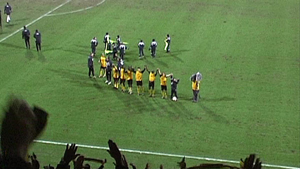
Meeuwis wist nog enkele companen te enthousiasmeren voor een hands-up met de
zuidtribune. De rest
loopt al naar west voor de Humba.
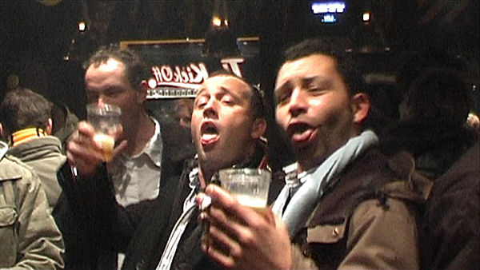
Gare tuupen in de Kickoff.
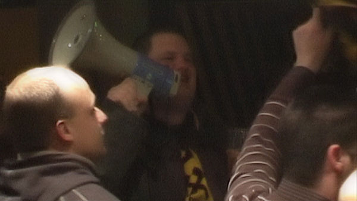
Koffieboer roept de spelers op voor een bezoek.
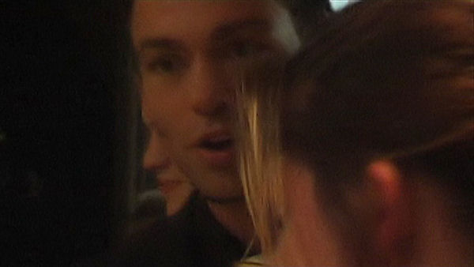
Prompt verschijnen Vandamme, Castro en (heel even) Matondo en Hadouir.